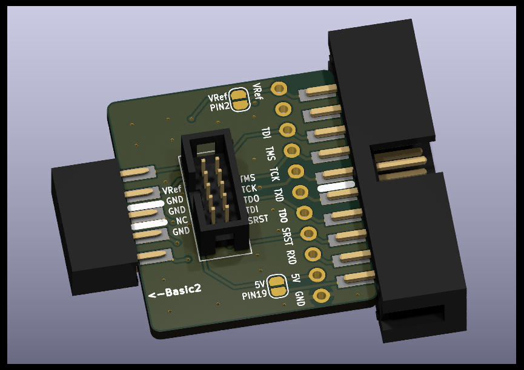
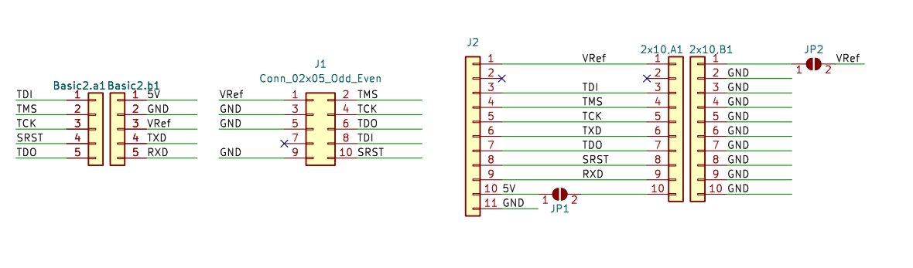

快速上手
硬件资料
固件更新
开发工具使用说明
应用实例
其他

从左到右依次为：
DC3母座，接上Vllink Basic2调试器
MIPI-10P 1.27mm 牛角座
[预留]11P 2.54mm 排针
JTAG-20P 2.54mm 牛角座，其PIN2与PIN19默认悬空，可通过短接点连接对应电源
PIN2
PIN19

interface_basic2_mipi10p_jtag20p.zip